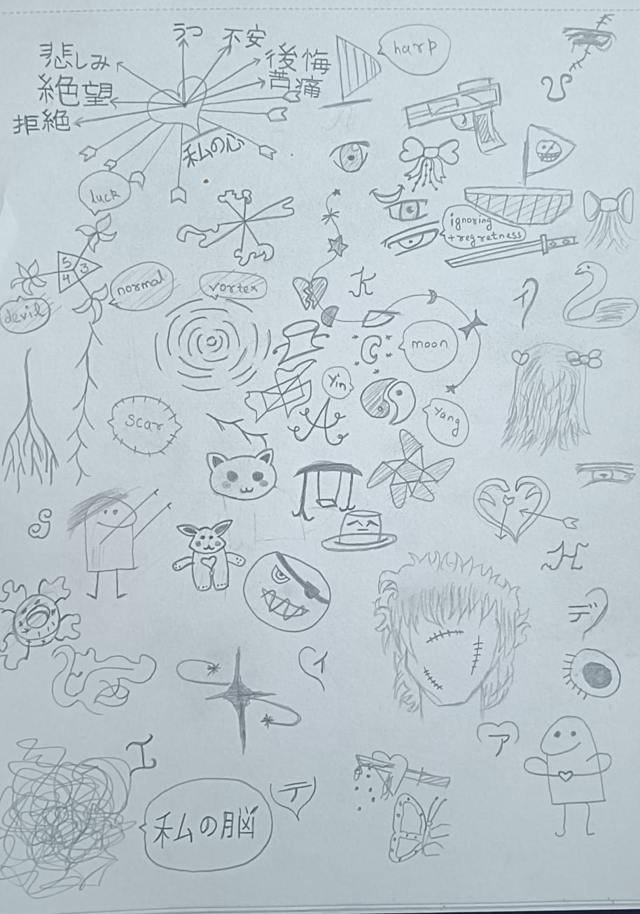
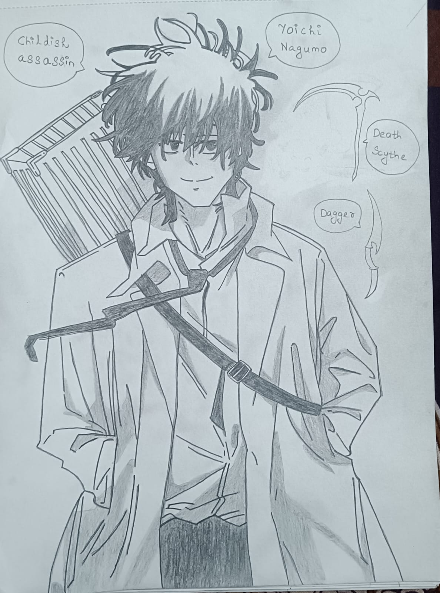
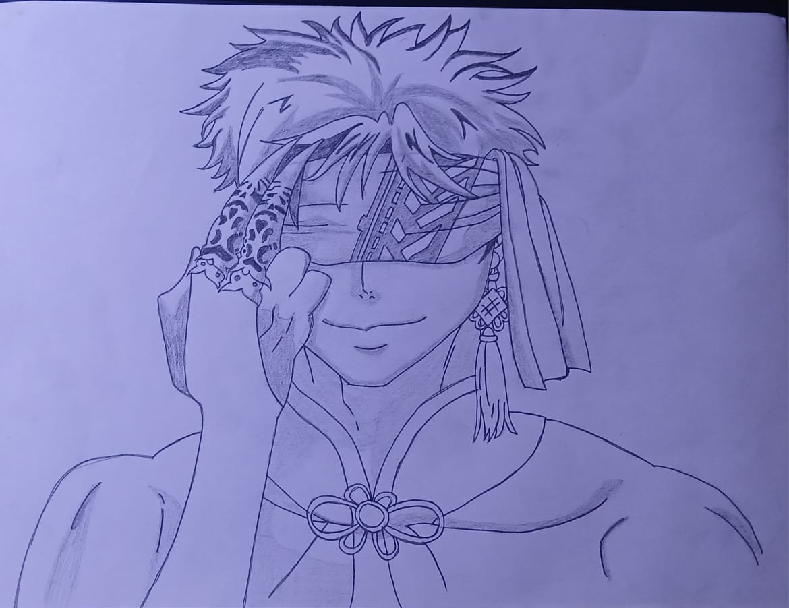
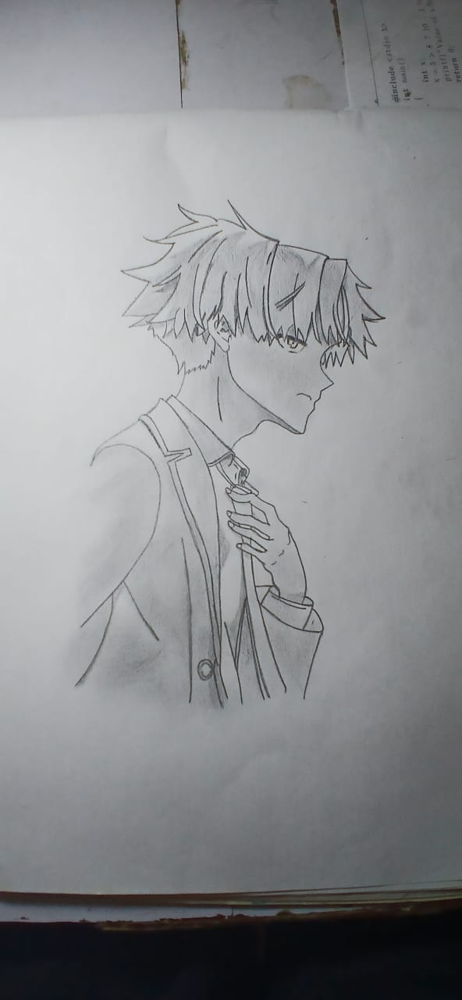
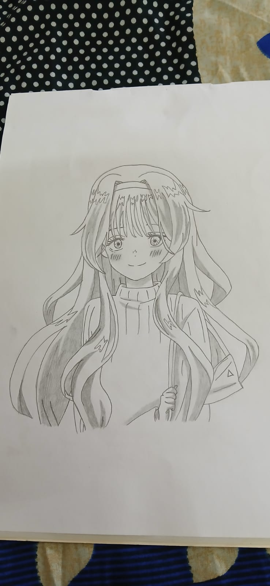
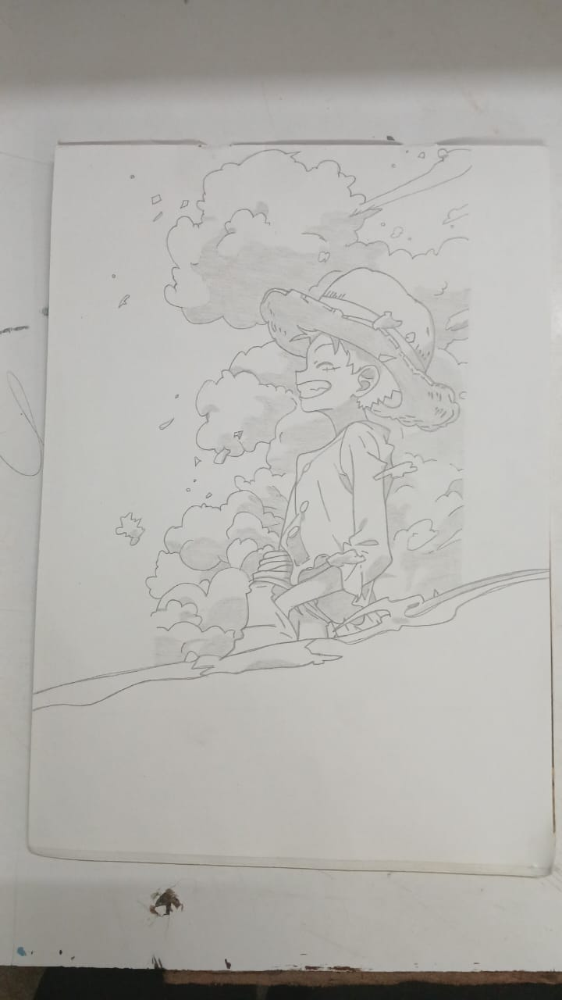
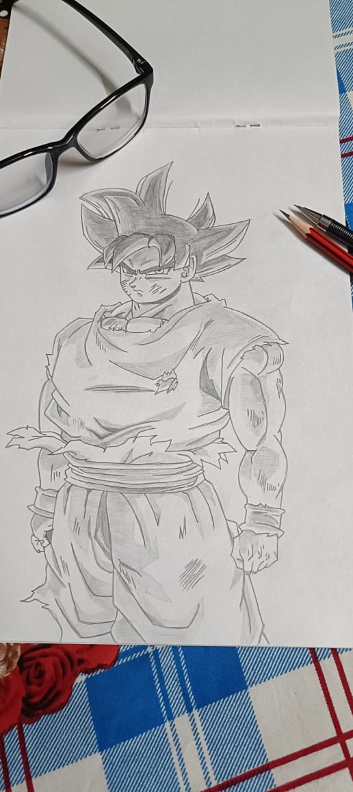
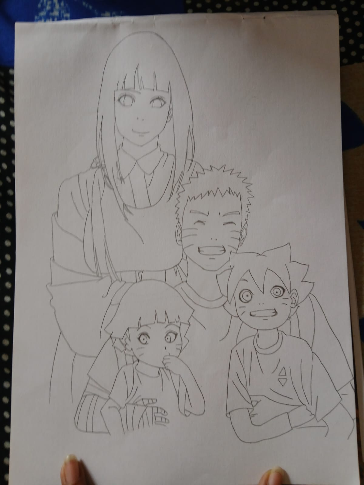

Here i will share all my hobbies and interests of my life besides Coding.
🎨 Sketching: I love sketching and i often do sketching to relax my mind.
😊 Anime: I love Watchng Anime and I am a big Fan of Luffy from One Piece.
Specially during exams ...
🎵🎶 Music: I love Listening music during coding, sketching and to just chill alone.
I sometimes dance too....
🎮 Gaming: I play games too when I am feeling bore or my friends call me to play with them
π Solving Maths: I often love to solve Maths when I feels like I have nothing to do.








1. Among us : Beware of me as an imposter.
2. Smash Karts: Just killing the players in front of me.
3. Garena Free Fire: only play with me with friends.
In Future I will also try playing PC games too...
♻STAY Tuned I will explore and discover more hobbies like this in the future....